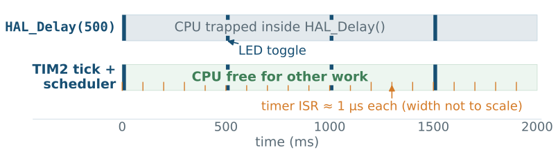
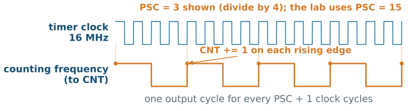

EE5203 Microprocessors
L07 - Timers
A blocking delay wastes the CPU
The L04 blink, and every version since, stops the CPU while it waits:
while (1) {
HAL_GPIO_TogglePin(GPIOA, GPIO_PIN_5);
HAL_Delay(500); // CPU does nothing useful here
}
Today: a timer counts the time instead. You will calculate PSC and ARR, use the update event by polling and by interrupt, build a 1 ms tick, and prove it in the SFR view.
A timer is a counter driven by a clock
A timer is a hardware counter that increments at a fixed rate and raises an event when it reaches a chosen value.
The first four boxes are registers you set once. The last box is what your program lives on.
The timer clock is 16 MHz on this board
With the default 16 MHz HSI and all bus prescalers at 1, every timer counts 16 000 000 ticks per second before prescaling.
01 The timer clock comes from the APB bus that carries the timer (TIM2 is on APB1).
02 If an APB prescaler is ever set above 1, the timer clock is twice that bus clock. Check before calculating.
03 Every period calculation today starts from the real 16 MHz, not from a number in an online example.
Deep dive: RM0368 Rev 6, §6.2 clock tree — p. 94.
The prescaler divides the timer clock
The prescaler divides the timer clock by PSC + 1 before it reaches the counter.

PSC is 16-bit (0…65535): 15 → 1 MHz (one tick per µs), 1599 → 10 kHz, 15999 → 1 kHz (one tick per ms). The reference manual calls the result the counter clock (CK_CNT).
The counter increments once per tick
CNT increments once per prescaled tick, in hardware, in parallel with your program:
▸ advance to run the counter
UIF is a pending bit in TIM2->SR, the same idea as the EXTI pending bit in L06.
In-lecture demo: interactive counter animation.
ARR sets the timer period
ARR holds the top value, so the counter visits ARR + 1 states (0 through ARR):

Period formula and the +1 rule
For one update per second from 16 MHz, split the division in two:
01 Both divisions use the register value plus one. PSC = 0 divides by 1; ARR = 999 means 1000 states.
02 Split so that both values fit in 16 bits. 1 kHz in the middle gives millisecond resolution for free.
03 A forgotten +1 makes every period slightly wrong. It is the classic timer bug.
Practice: choose PSC and ARR for 200 ms
Required: one update event every 200 ms from the 16 MHz timer clock.
1 Keeping the 1 kHz counting frequency, what is PSC?
2 What is ARR?
3 Give a second PSC/ARR pair that produces the same period.
PSC = 15999, ARR = 199. Alternatives abound: PSC = 1599 (10 kHz) with ARR = 1999 also gives 200 ms.
The timer registers behind the time base
Registers you write once (PSC, ARR), one that never stops (CNT), and one bit the hardware sets for you (UIF).
The real thing: RM0368 Rev 6, Fig. 87 General-purpose timer block diagram — p. 317. Find every block from this slide in it.
Configure the timer time base in HAL
TIM_HandleTypeDef htim2;
htim2.Instance = TIM2;
htim2.Init.Prescaler = 15999; // 16 MHz -> 1 kHz
htim2.Init.CounterMode = TIM_COUNTERMODE_UP;
htim2.Init.Period = 999; // 1 kHz -> 1 s
HAL_TIM_Base_Init(&htim2);01 The handle structure collects the timer’s settings, the GPIO_InitTypeDef pattern again.
02 Period is the HAL’s name for the ARR value.
03 In a CubeMX project this code is generated as MX_TIM2_Init().
Deep dive: UM1725 Rev 8, TIM base functions — p. 1065.
Preload: when new PSC and ARR values apply
New PSC and ARR values do not necessarily act immediately:
01 PSC is always buffered: the new value is copied into use at the next update event, up to one full period later.
02 ARR is buffered only when auto-reload preload (ARPE) is enabled. The HAL default writes it immediately.
03 Writing the UG bit in TIM2->EGR forces an update event now: the buffered prescaler loads and CNT resets. This is why the lab’s bare-metal init writes TIM2->EGR.
Changing a running timer’s speed? First ask when the new values take effect.
Polling the timer update flag
UIF. 3 clear it. 4 do the work.
AskEvery pass reads UIF with __HAL_TIM_GET_FLAG(). Most passes see 0 and move on. The loop never waits.
ActWhen UIF is 1: clear it first with __HAL_TIM_CLEAR_FLAG(), then toggle LD2. An uncleared UIF reads as a new event on the very next pass.
CostPolling keeps the loop free but spends one read on every pass, and a slow pass sees the event late. The interrupt path on the next slide removes the asking.
HAL_TIM_Base_Start(&htim2);1while (1) { /* other work runs freely here */ if (__HAL_TIM_GET_FLAG(&htim2, TIM_FLAG_UPDATE)) {2 __HAL_TIM_CLEAR_FLAG(&htim2, TIM_FLAG_UPDATE);3 HAL_GPIO_TogglePin(GPIOA, GPIO_PIN_5);4 }}The update event can raise an interrupt
Polling still spends loop time asking. The update event can instead take the exact path B1’s press took in L06:
Hardware raises the request; HAL clears UIF and calls your callback. The main loop no longer asks at all.
Timer interrupt mode: start and callback
main() arm the timer once. 1 highest priority. 2 unmask TIM2_IRQn in the NVIC. 3 start the counter and set UIE in TIM2->DIER.
HardwareTIM2 counts up to ARR, overflows and sets UIF. The NVIC accepts the request. No code of yours runs here.
GeneratedThe NVIC jumps to TIM2_IRQHandler(), which calls HAL_TIM_IRQHandler(). CubeMX wrote both in stm32f4xx_it.c. They clear UIF and pick your callback. Do not write your own.
Your codeThe HAL calls HAL_TIM_PeriodElapsedCallback() on every period. 4 one callback serves all timers, so check the instance. 5 do the work and return.
Whole pathOne setup block, one hardware event, two generated handlers, one callback you write. The colours in the path match the colours in the code.
HAL_NVIC_SetPriority(TIM2_IRQn, 0, 0);1
HAL_NVIC_EnableIRQ(TIM2_IRQn);2
HAL_TIM_Base_Start_IT(&htim2);3void HAL_TIM_PeriodElapsedCallback(
TIM_HandleTypeDef *htim)
{
if (htim->Instance == TIM2) {4
HAL_GPIO_TogglePin(GPIOA, GPIO_PIN_5);5
}
}Rules for code inside the callback
L06’s rules apply unchanged:
01 Check which instance caused the interrupt.
02 Record that the event happened: set a flag, count a tick.
03 Return quickly. No HAL_Delay(), no printing, no application logic.
A 1 ms timer callback that takes 2 ms to run is a program that falls behind forever.
A 1 ms tick counter from the timer
main(). 1 one shared counter. 2 the callback checks the instance 3 and adds one.
HardwarePSC = 15, ARR = 999: 16 MHz → 1 MHz → 1 kHz. One update event per millisecond. The generated handler and the HAL clear UIF and call the callback.
Your callbackThe callback does one thing: ms++. It reports that a millisecond passed and returns. No waiting, no application logic.
Main loopmain() reads ms whenever it likes. The ISR writes it and main() reads it, so it is volatile, for the same reason as L06's button_event.
PatternThe L06 pattern again: the callback reports, main() consumes. From here on, every delay in the program becomes a subtraction on ms.
volatile uint32_t ms = 0;1void HAL_TIM_PeriodElapsedCallback( TIM_HandleTypeDef *htim){ if (htim->Instance == TIM2) {2 ms++;3 }}Many intervals from one tick counter
ms − t_led ≥ 500: half a second has passed since the last toggle. Record the time first, t_led = ms, then toggle LD2.
100 ms taskms − t_sample ≥ 100: the same shape with a different interval. A third interval is one more subtraction. The timer setup does not change.
Other workNothing in this loop waits. Other work runs on every pass, and each task runs only when its time has come.
Wrap-aroundUnsigned subtraction keeps every schedule correct when ms wraps around after 49.7 days, the same arithmetic as L06's debounce.
uint32_t t_led = 0, t_sample = 0;while (1) { if ((ms - t_led) >= 500U) { // 500 ms1 t_led = ms; HAL_GPIO_TogglePin(GPIOA, GPIO_PIN_5); } if ((ms - t_sample) >= 100U) { // 100 ms2 t_sample = ms; /* read a sensor */ } /* other work continues */3}Practice: does the schedule drift?
The scheduler reschedules with t_led = ms;. Suppose one loop pass occasionally takes 30 ms because of other work.
1 Can a toggle be late? By how much, at worst?
2 Does the error stay bounded, or accumulate over the next toggles?
3 What changes if the reschedule line becomes t_led += 500U;?
Both can be 30 ms late once. t_led = ms re-anchors to the late moment, so the error accumulates. t_led += 500U keeps the deadlines fixed: one late toggle, no drift.
SysTick is the timer behind HAL_Delay
SysTick, a timer inside the Cortex-M core, has been ticking every millisecond since L01. HAL_Delay only waits on it.
01 HAL configures SysTick at startup; its interrupt increments HAL’s own millisecond counter.
02 HAL_Delay(500) reads that counter in a blocking loop. The counting was never the problem; the waiting was.
03 Today’s tick is the same idea on a timer you control, consumed without trapping the CPU.
Deep dive: PM0214 Rev 10, §4.5 SysTick timer — p. 246.
A free-running microsecond timer
Leave ARR at its 32-bit maximum and the counter itself becomes a clock:
/* PSC = 15 -> 1 MHz: CNT increments once per microsecond */
uint32_t start = TIM2->CNT;
do_work();
uint32_t elapsed_us = TIM2->CNT - start; // wrap-safe01 No interrupts at all. Read the counter twice and subtract.
02 TIM2 and TIM5 are the F401’s 32-bit timers: at 1 MHz they wrap after about 71 minutes.
03 This is how you measure code instead of guessing.
The STM32F401 timer family
| Family | F401 instances | Adds |
|---|---|---|
| General-purpose, 32-bit | TIM2, TIM5 |
long counts, all GP features |
| General-purpose, 16-bit | TIM3, TIM4, TIM9–TIM11 |
capture, compare, PWM |
| Advanced-control | TIM1 |
complementary outputs, motor control |
Every family shares today’s time base: clock → PSC → CNT → ARR → update. PWM and input capture (L08) are additions to it, not replacements.
Deep dive: RM0368 Rev 6, §13 TIM2 to TIM5 — p. 316; register map §13.4 — p. 353.
Timer configuration seen in the registers
STM32 HAL
01 SFR PROOF: pause after init, TIM2->PSC and TIM2->ARR hold your two numbers. Resume, pause again, TIM2->CNT has moved.
02 UIF: TIM2->SR bit 0 sets at each rollover; your code or HAL clears it. A successful build proves none of this.
Same registers, different interface. The clock-enable-first rule from L04 holds: TIM2 is on APB1, not AHB1.
Common timer mistakes
01 WRONG CLOCK ASSUMED: an online example’s 84 MHz math on our 16 MHz configuration, periods 5× too long.
02 MISSING +1: PSC = 16000 or ARR = 1000 where 15999/999 was meant.
03 CLOCK NOT ENABLED: TIM2 needs its APB1ENR bit. AHB1 was the GPIO bus.
04 NVIC FORGOTTEN: the update event fires, UIF sets, and nothing runs.
05 FLAG NOT CLEARED: polling code without CLEAR_FLAG sees an eternal event.
06 SLOW CALLBACK: work that belongs in main() running at interrupt priority.
Timer lab preview and summary
Lab: blink LD2 every 500 ms from a TIM2 update interrupt with no HAL_Delay(), then build the 1 ms tick and schedule two intervals. The SFR proof is required.
✓ Trace the pipeline: clock → PSC → CNT → ARR → update event.
✓ Calculate PSC and ARR for a required period, with the +1 rule.
✓ Consume an update event by polling and by interrupt.
✓ Build and use a 1 ms tick with wrap-safe scheduling.
✓ Verify timer behaviour in the register view.
Next: PWM, the same counter with an output pin attached to a compare value.
Exit ticket
01 FREQUENCY: What is the counting frequency from the 16 MHz timer clock?
02 PERIOD: How often does the update event fire?
03 PATH: Name the register bit that records the event and the function that HAL finally calls.
04 POLLING: Which two operations must a polling loop perform on UIF?
05 EVIDENCE: Which SFR observation proves the counter is running?
Every concept in this lecture, with page-linked sources: academic references.
EE5203 - L07